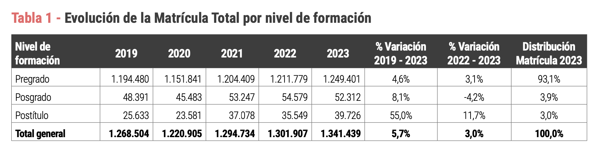
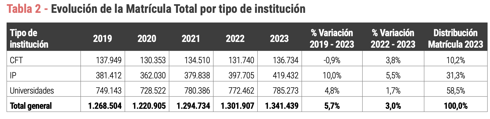
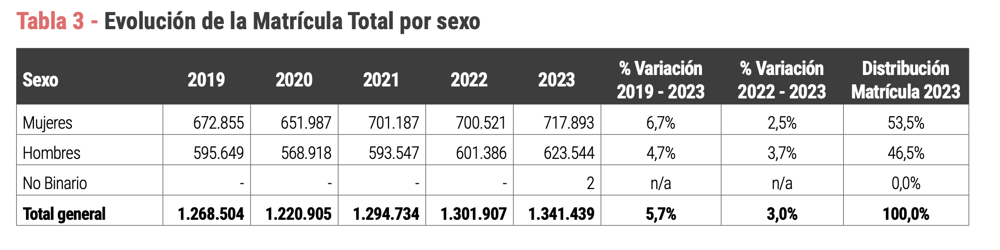
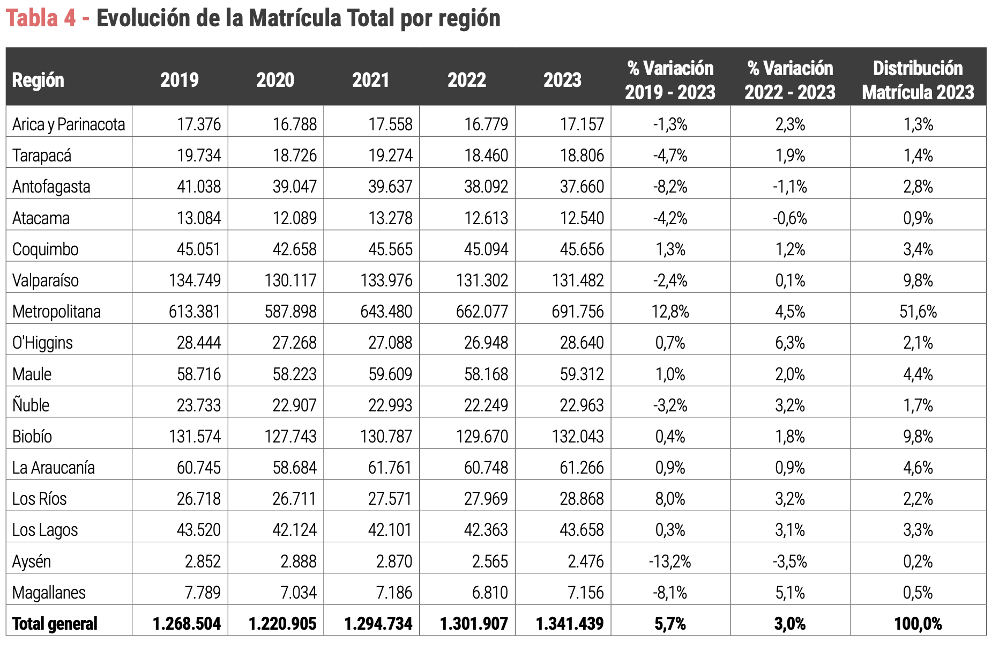
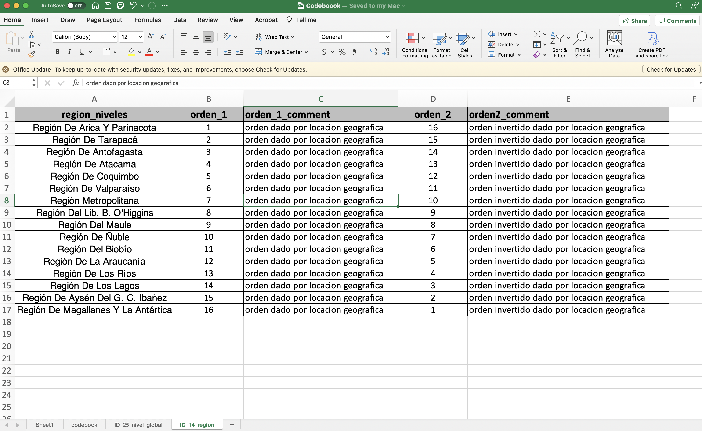
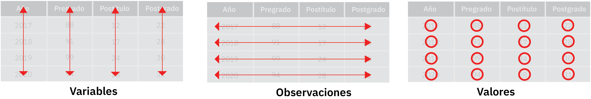
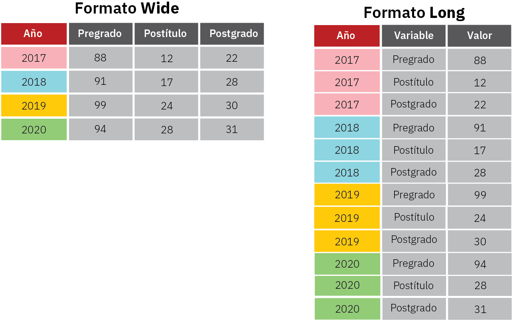

SiES data analysis - 1st year enrollment
The public database of the Chilean Higher Education Information Service (SiES) is used to analyze the first-year enrollment rate.
1. Introducción
Este tutorial usará la base de datos extraída del Servicio de Información de Educación Superior (SiES) ubicada en el siguiente link http://www.mifuturo.cl/bases-de-datos-de-matriculados. Como se indica en la página, la base de datos a trabajar:
“Corresponde a las bases de datos de estudiantes matriculadas y matriculados en las instituciones de Educación Superior vigentes en Chile, entre los años 2007 y 2023, tanto a nivel de Pregrado, como Posgrado y Postítulo”.
Usaremos esta base de datos para replicar algunas tablas y reportes que se encuentran en el documento Informe de matricula 2023 Educación Superior.
En particular, descargaremos la base de datos junto con su glosario, los que se encuentran indicados como
› Base Matrícula Histórica 2007 – 2023 06 | 07 | 2023› Glosario Base Matrícula
Referencias
1.1 Objetivo actividad
En este tutorial vamos a emplear los datos de SiES para replicar algunas tablas que se reportan en el documento Matrícula en Educacion Superior 2023 SIES elaborado en junio de 2023. En particular, replicaremos la Tabla 1 (Evolución de la Matrícula Total por nivel de formación) y la expandiremos desde el año 2007 hasta el 2023.

2. Elementos necesarios para ejecutar códigos
Para el presente tutorial vamos a emplear algunas librerias fundamentales para procesar inicialmente nuestros datos, como la librería readxl,dplyr, tidyr y ggplot2 Para que los códigos incluídos como guías de este tutorial funcionen es necesario que las librerías recomendadas sean instaladas primero, una vez que se instalan no se deben volver a instalar.
Esta librería, la podemos llamar e instalar empleando las siguientes línea de código:
#--------------------------------------
# instalar librerias
#--------------------------------------
#install.packages('readxl') # borrar el símbolo # para ejecutar código
#install.packages('dplyr') # borrar el símbolo # para ejecutar código
#install.packages('tidyr') # borrar el símbolo # para ejecutar código
#install.packages('ggplot2') # borrar el símbolo # para ejecutar código
#install.packages('stringr') # borrar el símbolo # para ejecutar código
#------------------------------------------------------------------------------
# cargar librarias
#------------------------------------------------------------------------------
library(readxl)
library(dplyr)
library(tidyr)
library(ggplot2)
library(stringr) # Agregada el 2 septiembre
#------------------------------------------------------------------------------
# Opcioes especiales
#------------------------------------------------------------------------------
# Evita la notacion cientifica
options(scipen=999)3. Ruta de trabajo
En esta sección daremos detalles sobre cómo establecer el lugar (carpeta) donde se ubican nuestras bases de datos y archivos. Se recomienda que siempre se trabaje en la misma carpeta (por ejemplo una carpeta que lleve por nombre taller01), de tal forma de centralizar la ubicación de sus datos, código y outputs.
Por ejemplo, imaginemos que creo mi carpeta de trabajo de nombre taller01. Dentro de la carpeta taller01 se encuentra la base de datos y el código R. Esta carpeta se encuentra dentro de otra carpeta de nombre talleres la que a su vez se encuentra en la carpeta Magister la que a su vez se encuentra alojada dentro de mi carpeta Dropbox. Luego
- En un computador con windows la RUTA de mi carpeta taller1 sería:
C:/Dropbox/Magister/talleres/taller01
Originalmente en Windows su ruta se encontrará con el backslash , como se muestra a continuación:
\(C:\backslash Users\backslash DL\backslash Dropbox\backslash Magister\backslash talleres\backslash taller01\)
por lo que para usarla en R, deberá cambiar \(\backslash\) por /.
-En un computador con Mac la RUTA de mi carpeta taller1 sería:
Users/Dropbox/Magister/talleres/taller01
- Deben declarar su directorio con el comando a continuación:
setwd(dir = "Users/Dropbox/Magister/talleres/taller01")De esta manera R sabrá que su directorio de trabajo (“working directory” = wd) estará fijo. Para ordenar las fuentes de información, vamos a crear tres carpetas:
- Una carpeta de nombre 01BasedeDatos donde se alojarán nuestras bases de datos (incluido nuestros
codebooks). - Una carpeta de nombre 02Outputs donde se alojará toda información que deseamos exportar luego de analizar datos en
R. - Una carpeta de nombre 03Bibliografia donde se alojará toda bibliografía relevante donde y toda información que nos sirva para programar, entender estadística, CheatSheet, u otros archivos.
4. Cargamos las bases de datos y codebook
Para abrir la base de datos del SiES y el codebook, puede ocupar los siguientes códigos. Vea que dependiendo de si utiliza Windows o Mac deberá optar por una opción u otra.
- Si
Rreclama por problemas de encoding, utilice el siguiente código
# Ejecutar el siguiente codigo para aquellas persons que usan Mac
db <- read.csv2('01BasedeDatos/MATRICULA OFICIAL 2007 AL 2023 09_06_2023 WEB.csv',
sep=";",header = TRUE, na.strings = c(""," "), fileEncoding="latin1")
codebook <- readxl::read_excel("01BasedeDatos/Codeboook.xlsx",
sheet='codebook',col_names =T, na=c(""," ")
)- Si
Rno reclama por problemas de encoding, puede eliminar la opciónfileEncoding="latin1"en el código anterior. Utilice el siguiente código para cargar la base de datos de matricula.
# Ejecutar el siguiente codigo para aquellas persons que usan Windows
db <- read.csv2('01BasedeDatos/MATRICULA OFICIAL 2007 AL 2023 09_06_2023 WEB.csv',
sep=";",header = TRUE)Notará que dependiendo del tipo de formato en el cual se encuentran guardados nuetros datos (formato csv o xlsx), el código a usar en R para leer dichas bases es diferente. Por un lado, usamos la función read.csv2 para leer archivos en formato csv. Por otro lado, usamos la función read_excel para leer archivos en formato xlsx. Para leer este último archivo, necesitamos usar la libreria readxl.
5. Limpieza de datos
5.1 Cambiamos el nombre de las columnas de nuestra base de datos
Usaremos ahora nuestro Codebook para cambiar el nombre de las columnas de nuestra base de dato. Para ello, usamos el siguiente código
names(db) <- codebook$Nombre_editado5.2 Procesamiento de datos: Modificación de los años
Como verá, la columna year contiene la información de los años en la forma MAT_XXXX, donde XXXX representa el número del año (es decir, MAT_2007, MAT_2008, MAT_2009, …, MAT_2021, MAT_2022 y MAT_2023). Necesitamos limpiar esta variable para que no incluya MAT_ al inicio. Esto lo haremos para dejar lo más clara posible nuestras tablas y gráficos que requieran el uso del año
Existen diversas formas de hacerlo. En este tutorial, usaremos la función str_sub() de la libreria stringr (una de las librerias más usada para procesar texto en R).
library(stringr)
library(dplyr)
db <- db %>% mutate(year_new = str_sub(year,-4,-1))
#movemos nuestra nueva columna year_new al inicio
db <- db %>% relocate(year_new, .after=year)A continuación se observa la variable year y year_new.
| year | year_new |
|---|---|
| MAT_2023 | 2023 |
| MAT_2021 | 2021 |
| MAT_2018 | 2018 |
| MAT_2014 | 2014 |
| MAT_2010 | 2010 |
6.Inspección, visualización o estructuración de datos
6.1 Evolución de la Matrícula Total por nivel de formación: Tabla descriptiva
Ahora usaremos la libería dplyr para crear una tabla resumen que estima la cantidad total de matriculados agrupados por año y nivel educacional. En este código, es relevante el operardor %>% (conocido como pipe), el que tiene como función recibir un dataframe para luego procesarlo.
library(dplyr)
matricula_evol.01 <- db %>% dplyr::select(year_new,matriculados_total,nivel_global) %>%
group_by(nivel_global,year_new) %>%
summarise(total = sum(matriculados_total, na.rm = T))La tabla matricula_evol.01 se muestra a continuación.
| nivel_global | year_new | total |
|---|---|---|
| Postgrado | 2007 | 20,693 |
| Postgrado | 2008 | 26,074 |
| Postgrado | 2009 | 28,357 |
| Postgrado | 2010 | 33,398 |
| Postgrado | 2011 | 34,480 |
| Postgrado | 2012 | 41,201 |
| Postgrado | 2013 | 46,726 |
| Postgrado | 2014 | 46,806 |
| Postgrado | 2015 | 45,116 |
| Postgrado | 2016 | 47,584 |
La tabla anterior se encuentra en formato long, por lo que ahora la convertimos en formato wide, de tal modo que pueda visualizarse tal como se encuentra en el documento institucional del SiES.
matricula_evol.02 <- tidyr::spread(matricula_evol.01, year_new,total) %>%
rename(., "Nivel de Formación"= nivel_global )El resultado se muestra a continuación. Por motivos de espacio, en la tabla solo se muestran algunos años. Sin embargo, en su computador debería verse para todos los años (desde 2007 hasta 2023).
| Nivel de Formación | 2007 | 2008 | 2009 | 2010 | 2021 | 2022 | 2023 |
|---|---|---|---|---|---|---|---|
| Postgrado | 20,693 | 26,074 | 28,357 | 33,398 | 53,247 | 54,579 | 52,312 |
| Postítulo | 7,801 | 10,374 | 14,022 | 13,962 | 37,078 | 35,549 | 39,726 |
| Pregrado | 748,344 | 783,349 | 849,340 | 938,258 | 1,204,409 | 1,211,779 | 1,249,399 |
6.2 Gráfico descriptivo
Usaremos nuestra tabla en formato long para representar visualmente la evolución de la matricula dentro del período de tiempo que comprende los años 2007 hasta 2023. Para ello, usaremos la libreria ggplot2 (principalmente usaremos esta libreria para construir gráficos, salvo casos particulares). La utilidad que tiene usar la libreria ggplot2 es que también utiliza el operador pipe (%>%) para procesar y construir gráficos a partir de un dataframe.
El siguiente código utiliza el dataframe matricula_evol.01 para construir un gráfico de barras.
library(dplyr)
library(ggplot2)
matricula_evol.01 %>%
ggplot(aes(x=as.factor(year_new), y=total, fill=nivel_global)) +
geom_bar(stat="identity") +
theme_bw() +
labs( x = "Año",
y = "Cantidad matricula total",
title ="Evolución matricula Educación Superior período 2007-2023",
fill = 'Nivel de formación')
A continuación se muestra la solución que replica otras tablas del documento SiES. Estas secciones por lo tanto están diseñadas para que usted pueda expandir y aplicar lo aprendido en las secciones anteriores.
7. Evolución de la Matrícula Total por tipo de institución (Tabla 2)
Replicaremos la Tabla 2 que da cuenta de la evolución de la Matrícula Total por tipo de institución, tal como se muestra en la figura de abajo. Además, expandiremos la tabla desde el año 2007 hasta el 2023.

Procesamos nuestros datos de forma análoga a como lo hicimos en la sección 6.1. Como primera tarea para procesar los datos, vamos a escribir un pseudo-código que reflejará el flujo lógico por medio del cual se irá trabajando la base de datos del SiES para obtener el resultado deseado. El pseudo código para este caso quedará expresado por la siguiente secuencia
Pseudo código:
\(\color{blue}{\it \text{Usa la base de datos}}\) del SiES \(\color{red}{\text{\%LUEGO\% }}\)
\(\color{blue}{\it \text{Selecciona las columnas}}\)year_new,matriculados_totalyinstitucion_class_nivel_1\(\color{red}{\text{\%LUEGO\% }}\)
\(\color{blue}{\it \text{Agrupa por}}\)institucion_class_nivel_1yyear_new\(\color{red}{\text{\%LUEGO\% }}\)
\(\color{blue}{\it \text{Calcula la suma total}}\) de matriculados usando la columnamatriculados_total
El pseudo-código anterior se traduce entonces en un código funcional que luego puede usarse como referencia para la implementación de funciones que provienen de la libreria dplyr. Para ello, se resaltó en color azul todos los procesos que se traducen en funciones usando la libreria dplyr. Por ejemplo, el proceso \(\color{blue}{\it \text{Selecciona las columnas}}\) se traduce en la función (o código) \(\color{blue}{\it \text{select()}}\) en la libreria dplyr. De forma análogca, el proceso \(\color{blue}{\it \text{Agrupa por}}\) se traduce en la función (o código) \(\color{blue}{\it \text{group\_by()}}\) en la libreria dplyr.
Note además que el operador \(\color{red}{\text{\%LUEGO\% }}\) expresa el flujo lógico en el procesamiento de los datos, y corresponde a la función lógica que se verá expresada por el símbolo pipe \(\color{red}{\text{\%>\% }}\). Luego, nuestro pseudo-código expresa un procesamiento de una datos que devuelve una tabla en formato Long, luego de haber \(\color{blue}{\it \text{seleccionado, agrupado}}\) y \(\color{blue}{\it \text{calculado}}\). Este flujo se traduce en una tabla que es guardada en una entidad de nombre mat_evol_institucion.
Aplicamos el pseudo código anterior para implementar un código en R usando la libreria dplyr.Este código ejecutará los procesos para analizar nuestros datos.
library(dplyr)
mat_evol_institucion <- db %>%
select(year_new,matriculados_total,institucion_class_nivel_1) %>%
group_by(institucion_class_nivel_1,year_new) %>%
summarise(total = sum(matriculados_total, na.rm = T))Luego, la entidad de nombre mat_evol_institucion es convertida en formato Wide.
mat_evol_institucion.02 <- tidyr::spread(mat_evol_institucion, year_new,total) %>%
rename(., "Tipo de institución"=institucion_class_nivel_1)Note que aquí hemos renombrado la columna institucion_class_nivel_1 por "Tipo de Institución" para desplegar luego una tabla con el nombre correcto en esta columna (tal como se muestra en la tabla 2 del documento del SiES). En la siguiente tabla vemos el resultado final.
| Tipo de institución | 2007 | 2008 | 2009 | 2010 | 2011 | 2012 | 2023 |
|---|---|---|---|---|---|---|---|
| Centros de Formación Técnica | 86,838 | 95,903 | 110,021 | 128,571 | 138,635 | 140,048 | 136,734 |
| Institutos Profesionales | 156,124 | 162,870 | 189,622 | 224,339 | 267,766 | 301,156 | 419,431 |
| Universidades | 533,876 | 561,024 | 592,076 | 632,708 | 662,698 | 685,716 | 785,272 |
Ahora procedemos a gráficar la tendencia de la matrícula según Institución de Educación Superior. Para ello, usamos un gráfico de barras apilado usando nuestra tabla en formato Long de nombre mat_evol_institucion, tal como se muestra a continuación.
library(dplyr)
library(ggplot2)
mat_evol_institucion %>%
ggplot(aes(x=as.factor(year_new), y=total, fill=institucion_class_nivel_1)) +
geom_bar(stat="identity") +
theme_bw() +
labs( x = "Año",
y = "Cantidad matricula total",
title ="Evolución matricula Educación Superior por tipo instituciónn",
fill = 'Tipo de institución')
8. Evolución de la Matrícula Total por sexo (Tabla 3)
Replicaremos la Tabla 3 que da cuenta de la Evolución de la Matrícula Total por sexo, tal como se muestra en la figura de abajo

En los casos anteriores (sección 6 y 7) solo tuvimos que procesar una columna para sumar la cantidad de matriculados según un criterio. Sin embargo, este caso presenta una diferencia ya que las variables de sexo se encuentran en dos columnas diferentes, una para dar cuenta de los matriculados para el sexo masculino (matriculados_hombre_programa), y otra columna para el sexo femenino (matriculados_mujer_programa).
Como alternativa para abordar este tipo de casos, se puede procesar los datos de cada columna (si observa el codebbok corresponden a matriculados_mujer_programa y matriculados_hombre_programa) de forma separada e implementar un código similar al que se usó en la sección 6 y/o 7. Esta opción requiere implementar mayor cantidad de código y no es muy óptima, pero resulta más clara y transparente. Otra alternativa, denominada aquí Opcion 2, consiste en implementar un código que permita procesar ambas columnas de forma integrada y no separada como en el caso anterior. La Opcion 2 requiere menos código, es más eficiente y escalable, pero puede resultar menos clara o transparente. Cada una de las opciones, ya sea Opcion 1 u Opcion 2 son totalmente válidas y se obtiene exactamente el mismo resultado, solo que con procedimientos distintos. Puede usar la opción que más crea óptima para sus necesidades.
Opción 1: Análisis de cada columna para luego integrarlas
Se crean dos tablas una para cada sexo. Esta forma es exactamente igual a los códigos usados anteriormente, con la única diferencia que se hace dos veces, una para cada tipo de sexo. Estas dos tablas (mat_evol.sexo.M y mat_evol.sexo.H) luego se combinan en una sola de nombre mat_evol.sexo.02. Como se comentó anteriormente, la gran desventaja que tiene este método es que no es escalable para los casos en donde una variable incluya más de dos o tres categorias. En este caso, solo tenemos que trabajar con dos categorias, es decir, hombre y mujeres. Sin embargo, si tuvieramos que usar este método para otra variable que tenga, por ejemplo, 10 categorias, entonces deberemos repetir este proceso 10 veces, para luego obtener 10 tablas antes de juntarlas, lo que terminará en un código bastante largo y poco legible.
mat_evol.sexo.M <- db %>%
select(year_new,matriculados_mujer_programa) %>%
group_by(year_new) %>%
summarise(total = sum(matriculados_mujer_programa, na.rm = T)) %>%
mutate(Sexo ="Mujeres")
mat_evol.sexo.H <- db %>%
select(year_new,matriculados_hombre_programa) %>%
group_by(year_new) %>%
summarise(total = sum(matriculados_hombre_programa, na.rm = T)) %>%
mutate(Sexo ="Hombres")
mat_evol.sexo.M.02 <- tidyr::spread(mat_evol.sexo.M, year_new, total)
mat_evol.sexo.H.02 <- tidyr::spread(mat_evol.sexo.H, year_new, total)
# Se combinan tablas hombre y mujeres en una sola tabla
mat_evol.sexo.02 <- dplyr::bind_rows(mat_evol.sexo.M.02, mat_evol.sexo.H.02) En la siguiente tabla vemos el resultado obtenido:
| Sexo | 2007 | 2008 | 2009 | 2010 | 2011 | 2012 | 2023 |
|---|---|---|---|---|---|---|---|
| Mujeres | 385,462 | 409,957 | 452,854 | 503,230 | 552,034 | 586,814 | 717,893 |
| Hombres | 391,376 | 409,840 | 438,865 | 482,388 | 517,065 | 540,106 | 623,544 |
Opción 2: Análisis integrado
Este es otro ejemplo que expresa el potencial que tiene la conversión de una tabla desde el formato Wide a Long (o viceversa). Usaremos esta técnica para análizar simulatenamente un conjunto de variables, como lo es el caso de de la variable sexo. Básicamente el análisis comienza con la selección de las columnas de interés: en este caso year_new matriculados_mujer_programa y matriculados_hombre_programa. Esta tabla filtrada corresponde a una tabla en formato Wide. Nos aprovecharemos de esto para convertir esta tabla en formato Long (vea apéndice) usando la función tidyr::gather(). De esta forma, integraremos en una sola columna la información del sexo (ya sea mujer u homber), y la denominaremos Sexo. Por su parte, en otra columna que denominamos matricula_total, guardamos la cantidad de matriculados según sexo. Finalmente, calculamos la suma total de los matriculados, los que se encontrarán agrupados por year_new y Sexo. Finalmente, con la función mutate() lo que hacemos es recodificar la columna Sexo usando como nuevas categorias Hombres y Mujeres.
library(dplyr)
# Forma 1 (Compacta pero un poco más complicada)
# Esta forma sigue la misma secuencia que los codigos usados anteriormente
# pero incluye algunas funciones extras (gather, mutate y recode)
mat_evol.sexo <- db %>%
select(year_new,matriculados_mujer_programa,
matriculados_hombre_programa) %>%
tidyr::gather(., "Sexo","matricula_total",2:3) %>%
group_by(year_new, Sexo) %>%
summarise(total = sum(matricula_total, na.rm = T)) %>%
mutate(
Sexo = recode(Sexo, matriculados_mujer_programa = "Mujeres",
matriculados_hombre_programa = "Hombres"))A continuación se muestra el resultado guardado en mat_evol.sexo, luego de ejecutar elcódigo anterior
| year_new | Sexo | total |
|---|---|---|
| 2007 | Hombres | 391,376 |
| 2007 | Mujeres | 385,462 |
| 2008 | Hombres | 409,840 |
| 2008 | Mujeres | 409,957 |
| 2009 | Hombres | 438,865 |
| 2009 | Mujeres | 452,854 |
| 2010 | Hombres | 482,388 |
| 2010 | Mujeres | 503,230 |
| 2011 | Hombres | 517,065 |
| 2011 | Mujeres | 552,034 |
| 2012 | Hombres | 540,106 |
| 2012 | Mujeres | 586,814 |
| 2013 | Hombres | 569,350 |
| 2013 | Mujeres | 615,021 |
| 2014 | Hombres | 583,260 |
Finalmente, la tabla mat_evol.sexo es convertida en formato Wide.
mat_evol.sexo.02<- tidyr::spread(mat_evol.sexo, year_new, total)En la siguiente tabla vemos el resultado obtenido usando como alternativa la Opcion 2.
| Sexo | 2007 | 2008 | 2009 | 2010 | 2011 | 2012 | 2023 |
|---|---|---|---|---|---|---|---|
| Hombres | 391,376 | 409,840 | 438,865 | 482,388 | 517,065 | 540,106 | 623,544 |
| Mujeres | 385,462 | 409,957 | 452,854 | 503,230 | 552,034 | 586,814 | 717,893 |
Note entonces que tanto con la Opcion 1 como con la Opcion 2 se obtiene la misma tabla final. La Opcion 1 implica obtener varias tablas intermedias, que luego integradas despliegan la misma formación que la que se obtuvo con la Opcion 2. La única diferencia es el proceso que se llevó a cabo para obtenerla. Podemos decir que la Opcion 2 es una versión compacta en comparación con la Opcion 1.
Sin perjucicio de lo anterior, la Opcion 1 cumple el propósito (al igual que la Opcion 2). Posiblemente si usted recién se está involucrando en el análisis de datos, pueda encontrar que esta alternativa de procesar datos es más comprensible y transparente (a diferencia de la Opcion 2 que si bien requiere menos código es más compleja para interpretar). Por lo tanto, siempre y cuando se conozcan las desventajas que tiene esta alternativa, su implementación puede considerarla aceptable.
Gráfico descriptivo
Usaremos nuestra tabla en formato long para representar visualmente la evolución de la matricula dentro del período de tiempo que comprende los años 2007 hasta 2023. El siguiente código utiliza el dataframe mat_evol.sexo de la Opcion 2 para construir el gráfico deseado.
library(dplyr)
library(ggplot2)
mat_evol.sexo %>%
ggplot(aes(x=as.factor(year_new), y=total, fill=Sexo)) +
geom_bar(stat="identity", position=position_dodge()) +
theme_bw() +
labs( x = "Año",
y = "Cantidad matricula total",
title ="Evolución matricula Educación Superior por Sexo",
fill = 'Sexo')
9. Evolución de la Matrícula Total por región (Tabla 4)
Replicaremos la Tabla 4 que da cuenta de la Evolución de la Matrícula Total por región, tal como se muestra en la figura de abajo. Esta tabla la expandiremos desde el año 2007 hasta el 2023.

El análisis de los datos para crear esta tabla es idéntica a la realizada en las secciones 6 y/o 7 de este tutorial. Sin embargo, ahora consideramos la variable region para estudiar la evolución de la matricula entre los años 2007 y 2023. El código se muestra a continuación:
library(dplyr)
mat_evol.region <- db %>%
select(year_new,region, matriculados_total ) %>%
group_by(year_new,region) %>%
summarise(total = sum(matriculados_total, na.rm = T))
#--------------------------------------------------
# convertimos de Long a Wide
#--------------------------------------------------
mat_evol.region.02 <- tidyr::spread(mat_evol.region, year_new, total)En la siguiente tabla observamos el resultado que por motivos de espacio solo lo mostramos par algunos años.
| region | 2007 | 2008 | 2009 | 2010 | 2011 | 2012 | 2023 |
|---|---|---|---|---|---|---|---|
| Región De Antofagasta | 28,714 | 30,408 | 33,426 | 36,254 | 37,552 | 38,426 | 37,660 |
| Región De Arica Y Parinacota | 12,507 | 13,429 | 13,354 | 14,662 | 14,833 | 15,473 | 17,157 |
| Región De Atacama | 6,828 | 7,797 | 8,205 | 9,108 | 10,282 | 10,724 | 12,540 |
| Región De Aysén Del G. C. Ibañez | 867 | 964 | 1,353 | 1,521 | 1,671 | 1,606 | 2,476 |
| Región De Coquimbo | 26,259 | 29,175 | 32,315 | 35,849 | 38,145 | 40,414 | 45,656 |
| Región De La Araucanía | 33,876 | 34,453 | 38,248 | 42,358 | 46,636 | 50,381 | 61,266 |
| Región De Los Lagos | 20,658 | 23,517 | 26,701 | 29,562 | 33,109 | 34,618 | 43,658 |
| Región De Los Ríos | 14,555 | 14,882 | 16,894 | 17,705 | 19,006 | 20,396 | 28,868 |
| Región De Magallanes Y La Antártica | 7,596 | 6,790 | 7,082 | 7,652 | 7,578 | 7,263 | 7,156 |
| Región De Ñuble | 14,589 | 14,579 | 16,856 | 19,341 | 21,032 | 22,750 | 22,963 |
| Región De Tarapacá | 12,076 | 13,287 | 14,305 | 15,542 | 15,716 | 15,696 | 18,806 |
| Región De Valparaíso | 94,265 | 100,977 | 107,378 | 116,170 | 123,107 | 125,397 | 131,482 |
| Región Del Biobío | 81,988 | 90,756 | 98,528 | 107,115 | 117,533 | 124,331 | 132,043 |
| Región Del Lib. B. O'Higgins | 11,318 | 11,827 | 15,757 | 18,830 | 21,632 | 25,134 | 28,640 |
| Región Del Maule | 29,034 | 34,241 | 38,782 | 43,720 | 54,398 | 58,780 | 59,312 |
| Región Metropolitana | 381,708 | 392,715 | 422,535 | 470,229 | 506,869 | 535,531 | 691,754 |
Finalmente, podemos gráficar la variación de la matricula por región. Para este caso, se muestra la variación de la matrícula total por región solamente para el año 2023. Si desea desplegar el mismo gráfico pero para otro año, solo debe cambiar c(2023) por otro año.
library(dplyr)
library(ggplot2)
mat_evol.region %>%
filter(year_new %in% c(2023))%>%
ggplot(aes(x=region, y=total, fill=year_new
)) +
geom_bar(stat="identity", position=position_dodge()) +
theme_bw() +
labs( x = "Región",
y = "Cantidad matricula total",
title ="Evolución matricula Educación Superior por región",
fill = 'Año')+coord_flip()
Notará que la tabla anterior se encuentra ordenda por orden alfabético, pero no siempre representa el ordenamiento adecuado o el que deseamos. Por ejemplo, en este caso lo ideal sería tener ordenadas las regiones en función de su localidad geográfica, es decir, la de más al Norte que se encuentre en la primera fila de la tabla y la más al sur en la última fila de la tabla. Vamos a explorar y a abordar estos casos en las siguientes secciones.
Ordenamiento específico de categorias: Uso del codebook
En algunas ocasiones vamos a querer ordenar la organización de los valores de una columna. Por ejemplo, a veces queremos organizarla en orden alfabético, o de menor cantidad a mayor cantidad. Sin embargo, también existen otros casos donde queramos ordenar una columna usando otro críterio, como por ejemplo, ordenar regiónes por su úbicación geográfica. La dificultad que implica esto es que no tenemos la información en ninguna variable de nuestra base de datos que permita ordenar la región por su localidad. Por lo tanto, vamos a tener que generar nuestra propía base de datos que contenga información sobre algún ordenamiento de los valores que toma la variable region. Esto entonces representa una oportunidad para usar nuestro codebook.
Un buen codebook no solo describe el nombre de las columnas, su escala de medición (o el tipo de dato asociado) y una descripción del significado de dicha varible. Un buen codebook también incluye información detallada sobre los niveles o categorias asociada a una variable. En el caso de la variable region se compone por 16 categorias, cada categoria asociada a una región de Chile. Luego, podemos incluir esta información como parte de nuestro codebook. Para ello, agregamos una nueva hoja hoja (sheet), la especificación de los niveles de la variable región, como se muestra a continuación:

En nuestro codebook creamos un nuevo sheet (u hoja) de nombre ID_14_region y en su interior encontramos una tabla con las columnas region_niveles que expresa todas la categorías distintas (o niveles) que toma la variable region que en este caso corresponde a las diferentes regiones del país, también tenemos las columnas orden_1, orden_1_comment que expresa mediante números el orden en el que quiero se organicen mis regiones (número 1 representa el primer elemento, el número 2 el segundo elemento y así sucesivamente) junto con un comentario que expresa la razón de dicho ordenamiento. Lo mismo aplica para las columnas orden_2 y orden2_comment.
Por lo tanto, para poder usar esta información que expresa el orden de las regiones como lo queremos (en orden dado por su locación geográfica), necesitamos importar la tabla anterior a R. Para ello, procedemos de foma similar a cuando se leyó el codebook, pero ahora debemos especificar el nombre del sheet correcto, en este caso ID_14_region.
# Cargar niveles de variables en el codeebook
#----------------------------------------------------
# ID: 14
# Columna: Region
#----------------------------------------------------
codebook_region <- readxl::read_excel("../../../DDBB_danynash_page/Codeboook.xlsx",
sheet='ID_14_region',col_names =T, na=c(""," ")
)
codebook_region <- as.data.frame(codebook_region)Aquí se muestra un extracto de la tabla que se importó usando el código anterior
| region_niveles | orden_1 | orden_1_comment |
|---|---|---|
| Región De Arica Y Parinacota | 1 | orden dado por locacion geografica |
| Región De Tarapacá | 2 | orden dado por locacion geografica |
| Región De Antofagasta | 3 | orden dado por locacion geografica |
| Región De Atacama | 4 | orden dado por locacion geografica |
| Región De Coquimbo | 5 | orden dado por locacion geografica |
| Región De Valparaíso | 6 | orden dado por locacion geografica |
| Región Metropolitana | 7 | orden dado por locacion geografica |
| Región Del Lib. B. O'Higgins | 8 | orden dado por locacion geografica |
| Región Del Maule | 9 | orden dado por locacion geografica |
| Región De Ñuble | 10 | orden dado por locacion geografica |
| Región Del Biobío | 11 | orden dado por locacion geografica |
| Región De La Araucanía | 12 | orden dado por locacion geografica |
| Región De Los Ríos | 13 | orden dado por locacion geografica |
| Región De Los Lagos | 14 | orden dado por locacion geografica |
| Región De Aysén Del G. C. Ibañez | 15 | orden dado por locacion geografica |
| Región De Magallanes Y La Antártica | 16 | orden dado por locacion geografica |
Ahora generamos la tabla pero con el ordenamiento de Norte a Sur. Para ello, usamos la información importada del codebook y capturaremos el orden dado por la variable orden_1, que queda guardada en la entindad de nombre orden_region_1. Luego, usando la función factor() especificamos en el argumento levels el orden respectivo de la variable region. En este caso, este orden queda dado por variable orden_region_1.
library(dplyr)
# Creamos una variable (vector) que contiene el orden de Norte a Sur,
# usamos la informacion del codebook para esto
orden_region_1 <- codebook_region %>%
slice(., orden_1) %>%
select(region_niveles) %>%
pull(region_niveles)
# Generamos la tabla con el orden de Norte a sur
mat_evol.region.02.NS <- mat_evol.region.02 %>%
mutate(region = factor(region,
levels = orden_region_1 )) %>%
arrange(region) | region | 2007 | 2008 | 2009 | 2010 | 2011 | 2012 | 2023 |
|---|---|---|---|---|---|---|---|
| Región De Arica Y Parinacota | 12,507 | 13,429 | 13,354 | 14,662 | 14,833 | 15,473 | 17,157 |
| Región De Tarapacá | 12,076 | 13,287 | 14,305 | 15,542 | 15,716 | 15,696 | 18,806 |
| Región De Antofagasta | 28,714 | 30,408 | 33,426 | 36,254 | 37,552 | 38,426 | 37,660 |
| Región De Atacama | 6,828 | 7,797 | 8,205 | 9,108 | 10,282 | 10,724 | 12,540 |
| Región De Coquimbo | 26,259 | 29,175 | 32,315 | 35,849 | 38,145 | 40,414 | 45,656 |
| Región De Valparaíso | 94,265 | 100,977 | 107,378 | 116,170 | 123,107 | 125,397 | 131,482 |
| Región Metropolitana | 381,708 | 392,715 | 422,535 | 470,229 | 506,869 | 535,531 | 691,754 |
| Región Del Lib. B. O'Higgins | 11,318 | 11,827 | 15,757 | 18,830 | 21,632 | 25,134 | 28,640 |
| Región Del Maule | 29,034 | 34,241 | 38,782 | 43,720 | 54,398 | 58,780 | 59,312 |
| Región De Ñuble | 14,589 | 14,579 | 16,856 | 19,341 | 21,032 | 22,750 | 22,963 |
| Región Del Biobío | 81,988 | 90,756 | 98,528 | 107,115 | 117,533 | 124,331 | 132,043 |
| Región De La Araucanía | 33,876 | 34,453 | 38,248 | 42,358 | 46,636 | 50,381 | 61,266 |
| Región De Los Ríos | 14,555 | 14,882 | 16,894 | 17,705 | 19,006 | 20,396 | 28,868 |
| Región De Los Lagos | 20,658 | 23,517 | 26,701 | 29,562 | 33,109 | 34,618 | 43,658 |
| Región De Aysén Del G. C. Ibañez | 867 | 964 | 1,353 | 1,521 | 1,671 | 1,606 | 2,476 |
| Región De Magallanes Y La Antártica | 7,596 | 6,790 | 7,082 | 7,652 | 7,578 | 7,263 | 7,156 |
Volvemos a usar el ordenamiento orden_region_1 y construimos un gráfico ordenandos las regiones según su ubicación geográfica.
mat_evol.region %>%
filter(year_new %in% 2023)%>%
mutate(region = factor(region, levels = rev(orden_region_1) )) %>%
ggplot(aes(x=region, y=total)) +
geom_bar(stat="identity") +
theme_bw() +
labs( x = "Región",
y = "Cantidad matricula total",
title ="Evolución matricula Educación Superior por región",
fill = 'Año')+coord_flip()
10. Evolución de la Matrícula Total por tipo de institución
Procesamos nuestros datos de forma análoga a como lo hicimos en la sección 6.1. Como primera tarea para procesar los datos, vamos a escribir un pseudo-código que reflejará el flujo lógico por medio del cual se irá trabajando la base de datos del SiES para obtener el resultado deseado. El pseudo código para este caso quedará expresado por la siguiente secuencia
Pseudo código:
\(\color{blue}{\it \text{Usa la base de datos}}\) del SiES \(\color{red}{\text{\%LUEGO\% }}\)
\(\color{blue}{\it \text{Selecciona las columnas}}\)year_new,matriculados_totalyinstitucion_class_nivel_2\(\color{red}{\text{\%LUEGO\% }}\)
\(\color{blue}{\it \text{Agrupa por}}\)institucion_class_nivel_2yyear_new\(\color{red}{\text{\%LUEGO\% }}\)
\(\color{blue}{\it \text{Calcula la suma total}}\) de matriculados usando la columnamatriculados_total
Aplicamos el pseudo código anterior para implementar un código en R usando la libreria dplyr.Este código ejecutará los procesos para analizar nuestros datos.
library(dplyr)
mat_evol.institucion_class <- db %>%
select(year_new,institucion_class_nivel_2, matriculados_total ) %>%
group_by(year_new,institucion_class_nivel_2) %>%
summarise(total = sum(matriculados_total, na.rm = T))Luego, la entidad de nombre mat_evol.institucion_class es convertida en formato Wide.
mat_evol.institucion_class.02 <- tidyr::spread(mat_evol.institucion_class, year_new,total) %>%
rename(., "Tipo de institución"=institucion_class_nivel_2)Note que aquí hemos renombrado la columna institucion_class_nivel_2 por "Tipo Educación Superior" para desplegar luego una tabla con el nombre correcto en esta columna (tal como se muestra en la tabla 2 del documento del SiES). En la siguiente tabla vemos el resultado final.
| Tipo de institución | 2007 | 2008 | 2009 | 2010 | 2011 | 2012 | 2023 |
|---|---|---|---|---|---|---|---|
| Centros de Formación Técnica | 86,838 | 95,903 | 110,021 | 128,571 | 138,635 | 140,048 | 136,734 |
| Institutos Profesionales | 156,124 | 162,870 | 189,622 | 224,339 | 267,766 | 301,156 | 419,431 |
| Universidades (* Carrera en Convenio) | 471 | ||||||
| Universidades CRUCH | 285,984 | 295,158 | 303,127 | 310,890 | 309,333 | 311,775 | 438,406 |
| Universidades Privadas | 247,892 | 265,866 | 288,949 | 321,818 | 353,365 | 373,941 | 346,395 |
Ahora procedemos a gráficar la tendencia de la matrícula según Institución de Educación Superior. Para ello, usamos un gráfico de barras apilado usando nuestra tabla en formato Long de nombre mat_evol.institucion_class, tal como se muestra a continuación.
library(dplyr)
library(ggplot2)
mat_evol.institucion_class %>%
ggplot(aes(x=as.factor(year_new), y=total, fill=institucion_class_nivel_2)) +
geom_bar(stat="identity") +
theme_bw() +
labs( x = "Año",
y = "Cantidad matricula total",
title ="Evolución matricula Educación Superior por tipo instituciónn",
fill = 'Tipo de institución')
A.1 Apéndice
A.1.1 Dataframe en R
Puede consultar la siguiente referencia para indagar sobre lo que significa un dataframe en R https://bookdown.org/jboscomendoza/r-principiantes4/data-frames.html.
A.1.2 Nomenclatura
Notemos que usamos un lenguaje específico (o metalenguaje) para referirnos a algunos elementos de nuestro set de datos. En la imagen de abajo se exponen tres conceptos para expresar elementos estructurales relevantes de un set de datos1 (Wickham, 2014) :

- Cada columna expresa la operacionalización de una variable. Luego, entenderemos variable o columna de forma equivalente.
- Cada fila es una observación. En otras palabras, una fila completa representa una observación en nuestro conjunto de datos. Por lo tanto, una observación comprende tantas variables como columnas tenga nuestro conjunto de datos
- Cada celda es un único valor (no necesariamente númerico). Sería la instanciación (valor) que toma una variable para una observación en partícular. Notemos que aquí no nos referimos a una celda como un dato, ya que un dato implica información, es decir, se asocia con un proceso de recolección, análisis, interpretación y acción.
A.1.2 Datos estructurados en formato Wide y Long
Un conjunto de datos2 puede representarse en dos formatos o estructuras diferentes3, wide (ancho) y long (largo):
Un formato/estructura
widecontiene valores que no se repiten en una columna de interés.Un formato/estructura
longcontiene valores que sí se repiten en una columna de interés
Por ejemplo, considere los dos conjuntos de datos siguientes, ambos contienen exactamente los mismos valores pero se estructuran en formatos diferentes:

En algunas ocasiones dependiendo del tipo de análisis que realicemos, vamos a estructurar nuestros datos en uno de los dos formatos. Por ejemplo, usualmente cuando queremos hacer test de ANOVA o gráficar un set de 2 variables que tienen diferentes categorias como posibles valores, usaremos el formato long para hacerlo. Por otra parte, el formato wide es bastante útil para crear, transformar o limpiar variables. En general, transitamos desde una estructura a otra de forma iterativa para cumplir propósitos específicos.
Under Construction
Footnotes
Aquí usamos un metalenguaje que proviene del trabajo desarrollo por Wickham en la construcción de la libreria tidy como una forma estándar de asignar un significado a la estructura de un conjunto de datos. Para mayores detalles vea Wickham, H. (2014). Tidy Data. Journal of Statistical Software 59 (10). DOl: 10.18637/jss. v059.i10↩︎
En
Rtipicamente este conjunto de datos queda capturado por undataframe. Puede consultar el link para mayores detalles sobre lo que es undataframe.↩︎Convertir un conjunto de datos en formato
longowidees lo que también se conoce como tablas pivotes.↩︎